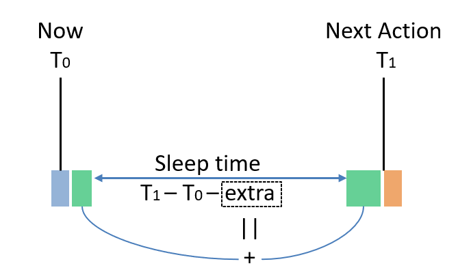

4 API
There is a global switch for power saving, Enable or Disable, which can be
configured by platform_config at any time:
// To enable power saving
platform_config(PLATFORM_CFG_POWER_SAVING, PLATFORM_CFG_ENABLE);
// To disable power saving
platform_config(PLATFORM_CFG_POWER_SAVING, PLATFORM_CFG_DISABLE);4.1 Callback events
As discussed in Involvement of Apps, there are two events that should be handled by Apps:
4.1.1 PLATFORM_CB_EVT_QUERY_DEEP_SLEEP_ALLOWED
Handler of this event returns bit combination of allowed sleep modes in Category B. A value of 0 means that no mode in Category B is allowed at present.
#define PLATFORM_ALLOW_DEEP_SLEEP ...
#define PLATFORM_ALLOW_DEEPER_SLEEP ...
#define PLATFORM_ALLOW_BLE_ONLY_SLEEP ...When DEEPER SLEEP is allowed, DEEP SLEEP is also allowed implicitly. For example, if both DEEP and DEEPER SLEEP are allowed, then:
return PLATFORM_ALLOW_DEEP_SLEEP + PLATFORM_ALLOW_DEEPER_SLEEP;or, simply (although not recommended),
return PLATFORM_ALLOW_DEEPER_SLEEP;For ING916, Apps can also configure external wake up sources in the handle.
When a sleep mode returned as allowed but is not supported in the system, the sleep mode is ignored.
4.1.2 PLATFORM_CB_EVT_BEFORE_DEEP_SLEEP6
When platform decides to enter one of Category B sleep modes, this event is emitted. Apps can take this opportunity to configure peripherals on-demand. The callback function shall be simple and return as soon as possible.
Input parameter void *data is casted from platform_sleep_category_b_t,
representing the selected sleep mode.
For ING916, Apps can also configure external wake up sources in the handle.
4.1.3 PLATFORM_CB_EVT_ON_DEEP_SLEEP_WAKEUP
In the handler of this event, Apps can re-initialize peripherals and do other jobs according to the needs.
Input parameter void *data is casted from platform_wakeup_call_reason_t:
typedef enum
{
PLATFORM_WAKEUP_REASON_NORMAL = ...,
PLATFORM_WAKEUP_REASON_ABORTED = ...,
} platform_wakeup_call_reason_t;PLATFORM_WAKEUP_REASON_NORMAL means that this event is emitted for a normal (successful) wake up procedure, i.e. the sleep procedure is completed successfully; PLATFORM_WAKEUP_REASON_ABORTED means that the previous sleep procedure is aborted, i.e. sleep had not happened at all. For example, trying to go to DEEP SLEEP while EXT_INT is asserted will be a failure, and sleep will not happen.
Event with PLATFORM_WAKEUP_REASON_NORMAL is always emitted; while
event with PLATFORM_WAKEUP_REASON_ABORTED is emitted when
PLATFORM_CFG_ALWAYS_CALL_WAKEUP is Enabled. For ING918, PLATFORM_CFG_ALWAYS_CALL_WAKEUP
is default to Disabled; while for ING916, default to Enabled. This is
because for ING916, external wake up sources such GPIO might need to be
reconfigured if sleep procedure is aborted. Without this event, Apps will
not be able to do such reconfiguration. Since external sources are not configurable
in the case of ING918, so it is default to Disabled.
If PLATFORM_CFG_ALWAYS_CALL_WAKEUP is Enabled, then there will be
a PLATFORM_CB_EVT_ON_DEEP_SLEEP_WAKEUP event definitely for each
PLATFORM_CB_EVT_QUERY_DEEP_SLEEP_ALLOWED event that returns a non-0 value.
At present, this handler is invoked in a strange context. It is in neither an ordinary process, nor an interrupt service routine. In the case of FreeRTOS, neither normal APIs or their FromISR variants are allowed, with only a few exceptions, such as:
- Use
xSemaphoreGiveFromISRon a binary semaphore.
Some platform APIs might be unavailable, either. For example, platform_get_us_time() on
ING918 would not get reliable value, while on ING916, it would hang.
4.1.4 PLATFORM_CB_EVT_ON_IDLE_TASK_RESUMED7
After event PLATFORM_CB_EVT_ON_DEEP_SLEEP_WAKEUP with reason PLATFORM_WAKEUP_REASON_NORMAL, and the idle process is fully resumed from power saving, this event is emitted.
Input parameter void *data is always 0.
Comparing with PLATFORM_CB_EVT_ON_DEEP_SLEEP_WAKEUP, in this event:
All OS functionalities are resumed;
For NoOS variants, the callback is invoked by
platform_os_idle_resumed_hook(). Therefore,platform_os_idle_resumed_hook()must be properly used.All platform APIs are functional;
Event callback function is invoked in the idle process.
The prototype of event handles should be compatible of:
typedef uint32_t (*f_platform_evt_cb)(void *data, void *user_data);Handlers are registered by:
void platform_set_evt_callback(
// the event
platform_evt_callback_type_t type,
// the callback function
f_platform_evt_cb f,
// user data that will be passed into callback function `f`
void *user_data
);4.2 Interrupts
Since CPU is powered off in Category B sleep modes, after waken up, from CPU’s point of view, interrupts should be re-enabled.
For example, an UART port is used the App with both Rx and Tx interrupts are enabled. Then, in the waken up event handle, not only the peripheral itself should be re-initialized, its Rx and Tx interrupts enabled, but also the corresponding position in interrupt vector table. In the case of ARM Cortex-M processors, it is called NVIC8.
If the ISR is registered by platform_set_irq_callback, then there are two options to
re-enable the interrupt:
Call
platform_set_irq_callbackagain, since this API will enable the interrupt;Use
platform_enable_irq:void platform_enable_irq( // corresponding interrupt request type platform_irq_callback_type_t type, // flag = 1 for enable; flag = 0 for disable uint8_t flag);
If the ISR is in the table registered by platform_set_irq_callback_table, then
use platform_enable_irq, too.
In the case of ARM Cortex-M processors, the priority of an interrupt is identified
by an unsigned integer whose width is __NVIC_PRIO_BITS, where a higher value represents a lower priority.
Therefore, the highest priority is \(0\) and the lowest is (1 << __NVIC_PRIO_BITS) - 1.
Note that, \(0\) is not allowed here9,
so the highest priority shall be \(1\).
When using FreeRTOS, the value for highest priority is defined by and can be got from
configLIBRARY_MAX_SYSCALL_INTERRUPT_PRIORITY.
Priorities of interrupts are all reset to default configurations as well after waken up. Default configurations are given in Table 4.1.
| Interrupt | ING918 | ING916 |
|---|---|---|
| BLE sub-system | 3 | 6 |
| Others | 5 | 11 |
4.2.1 Side Note on Priority
The BLE stack in ING91X are designed to be soft real-time as much as possible, for example, the whole system can be stopped and resumed later without lost of BLE connection if the supervision timer is not reached. For hard real-time, there are deadlines that must be met each and every time. In such cases, developers might need to change those priorities and will assign the highest priorities to those interrupts that look like to the most important. However, that is not the optimal algorithm. Rate Monotonic Algorithm10 is a classic algorithm that should be considered firstly.
To modify priority, call platform_read_info to get the underlying IRQ number,
then use corresponding API of CPU to modify it. For example, change the priority
of UART0 to 7, in the case of ARM Cortex-M processors:
IRQn_Type n = (IRQn_Type)platform_read_info(
PLATFOFM_INFO_IRQ_NUMBER + PLATFORM_CB_IRQ_UART0);
NVIC_SetPriority(n, 7);When assigning a higher priority than BLE sub-system, Link Layer APIs are NOT allowed to be invoked in these ISR(s) even though they are marked as thread safe.
4.3 Shutdown
Shutdown is initiated by calling platform_shutdown:
void platform_shutdown(
// Duration before power on again (measured in cycles of real-time clock)
const uint32_t duration_cycles,
// Pointer to the start of data to be retained
const void *p_retention_data,
// Size of the data to be retained
const uint32_t data_size);When duration_cycles is zero, power on when external wake up source is asserted.
When duration_cycles is not zero, it must be larger than a minimum value of 825
cycles (about \(25.18ms\)) reserved for hardware.
data_size can be zero too if no data is needed to be retained. Only part of SYS
memory starting from 0x2000000 can be retained.
If this function fails, it will return. If this function successes, CPU is powered off, so it will not return.
4.4 The Real-time Clock
The Real-time clock is crucial for power saving. There are two sources for this clock, one is internal real-time RC clock, and the other is the real-time crystal oscillator which needs an external crystal. So, platform provides APIs to select clock source, and change settings:
PLATFORM_CFG_RT_RC_EN
Enable/Disable the internal real-time RC clock. Default: Enabled.
PLATFORM_CFG_RT_OSC_EN
Enable/Disable the real-time crystal oscillator. Default: Enable.
PLATFORM_CFG_RT_CLK
Real-time clock selection. Flag is
platform_rt_clk_src_twith default valuePLATFORM_RT_RC:typedef enum { // external real-time crystal oscillator PLATFORM_RT_OSC, // internal real-time RC clock PLATFORM_RT_RC } platform_rt_clk_src_t;When modifying this configuration, both RT_RC and RT_OSC should be enabled. For ING918: both clocks must be running; To ensure a clock is running:
- RT_OSC: wait until status of RT_OSC is OK;
- RT_RC: wait \(100\mu s\) after enabled.
It’s recommended to wait another \(100\mu s\) before disabling the unused one.
PLATFORM_CFG_RT_CLK_ACC
Configure Real-time clock accuracy in ppm.
PLATFORM_CFG_RT_CLK_CALI_PERIOD
Real-time clock auto-calibration11 period in seconds. Default: \(3600 \times 2 = 2 (\mathit{hours})\).
Beside auto-calibration, it can also be started manually by:
uint32_t platform_calibrate_rt_clk(void);
The frequency of Real-time clock can be calculated from calibration value:
\[ f = \frac{65536000000}{\mathit{Cali}} \mathit{Hz}, \]
where, the calibration value \((\mathit{Cali})\) is an unsigned integer returned by
platform_read_info(PLATFORM_INFO_RT_CLK_CALI_VALUE).
4.4.1 Internal real-time RC Clock
The internal real-time RC clock is less accurate real-time crystal oscillator generally. It can be tuned by selecting property capacitor and resistor. This process is done by invoking:
uint16_t platform_rt_rc_auto_tune(void);The frequency is tuned to different frequencies by platform_rt_rc_auto_tune at present
(Table 4.2).
| Family | Frequency (Hz) |
|---|---|
| ING918 | 50000 |
| ING916 | 32768 |
This process takes hundreds of milliseconds, so it recommended to use it in a thread but not
in app_main. This process can be done only once after starting up.
It also returns a value representing the best choice which can be saved and used to
tune the clock directly in latter restarts:
void platform_rt_rc_tune(
uint16_t value // returned by `platform_rt_rc_auto_tune`
);This framework does not depends on a specific frequency, and it is possible to
tune to a another frequency by calling platform_rt_rc_auto_tune2:
uint16_t platform_rt_rc_auto_tune2(
// target frequency in Hz
uint32_t target_frequency);
ING918: RC clock’s power supply after waken up from
DEEP SLEEP is different from starting up. Therefore, calling
platform_rt_rc_auto_tune() after DEEP SLEEP can achieve
better accuracy.
4.5 Timers
Platform also provides a few timer APIs coupled with power saving.
There is an internal counter increased by \(1\) per \(1 \mu s\), which wraps after
\(7953.64 \mathit{days} (\approx 21.79 \mathit{years})\). Therefore, this timer can
be treated as never wrapping practically. This counter is carefully recovered
during waking up12. It is reset to zero when power up again from
shutdown. Use platform_get_us_time to read this counter:
uint64_t platform_get_us_time(void);System tick is disabled and restarted when entering and leaving sleep modes.
It’s difficult to properly reconfigure it accurately. Platform provides
a configure item PLATFORM_CFG_RTOS_ENH_TICK. When enabled, accuracy of system ticks is improved
but less power efficiency.
Platform also provides another timer that survives in all sleep modes and is more accurate
than system ticks. Such timers can be created by calling platform_set_timer:
void platform_set_timer(
// callback function when timer expires
void (* callback)(void),
// timer expires after this delay from now
// Unit: 625us
uint32_t delay);This timer has some unique features:
- Comparing to hardware timers, this timer can be thought as “running” during power saving mode;
- Comparing to RTOS software timers, this timer is software + hardware too;
- Comparing to RTOS software timers, this timer may be more accurate in some circumstance;
- This function always succeed, and only fails when running out of memory.
callback is also the identifier of the timer. So below two lines defines only
one timer expiring after 200 units but not two separate timers:
platform_set_timer(f, 100);
platform_set_timer(f, 200);The callback function is called in a RTOS task (if existing), but not an ISR.
Range of delay is \(0 \sim \mathit{0x7fffffff}\). When delay is zero, the timer associated
with the callback function is cleared. Since delay is in \(625 \mu s\), the maximum
delay is \(372.827 \mathit{hours} (\approx 15.5345 \mathit{days})\).
4.6 IDLE Procedure
As mentioned in Sleep Modes, IDLE mode is base on CPU’s feature solely. It’s common for CPU to have an instruction that instruct CPU to stop and enter a slight sleep mode. It can wake up (continue to execute) quickly when there is any interrupt/exception, or other signals. For x86 processors, the instruction is HLT (halt), while for ARM Cortex-M processors, it is wfi (wait for interrupts) or wfe (wait for events). When there is only one ARM Cortex-M processor, the IDLE procedure is simply a wfi guarded by a pair of synchronization barriers:
__DSB();
__wfi();
__ISB();Since there is a PLL in ING916, CPU and other components may run at a range of frequencies,
event PLATFORM_CB_EVT_IDLE_PROC is defined to provide flexibility of customizing
the IDLE procedure. This event is emitted each time IDLE mode is entered, and default
IDLE procedure is replaced by the callback function. For example, Apps can lower
clock frequencies to enjoy much low power consumption in IDLE mode if the slower
response in waking up is acceptable:
static uint32_t idle_proc(void *dummy, void *user_data)
{
SYSCTRL_ConfigPLLClk(DIV_PRE, LOOP, 63);
__DSB();
__WFI();
__ISB();
SYSCTRL_ConfigPLLClk(DIV_PRE, LOOP, DIV_OUTPUT);
return 0;
}
platform_set_evt_callback(PLATFORM_CB_EVT_IDLE_PROC,
idle_proc, NULL);4.7 Timing
Finally, there are several configuration to share some information about outside world to the power saving framework.
PLATFORM_CFG_xx_TIME_REDUCTION which helps to answer how much time the sleep can take;
As shown in Figure 4.1, suppose now is \(T_0\), and next action occurs at \(T_1\). Obviously, the system can not sleep for \((T_1 - T_0)\), since there are pre-processing and post-processing in both hardware and software, including events callbacks such
PLATFORM_CB_EVT_BEFORE_DEEP_SLEEP, which will take some time too. So extra time needs to be reduced from \((T_1 - T_0)\).Figure 4.1: Sleep Time Calculation
The amount of time can be configured through
PLATFORM_CFG_SLEEP_TIME_REDUCTIONfor SLEEP mode, andPLATFORM_CFG_DEEP_SLEEP_TIME_REDUCTIONfor DEEP SLEEP and DEEPER SLEEP modes.PLATFORM_CFG_SLEEP_TIME_REDUCTION is not applicable to ING916.
PLATFORM_CFG_LL_DELAY_COMPENSATION which helps to answer when starting to configure BLE sub-system.
Suppose a BLE activity occurs at \(T_1\) exactly, Link Layer software need to properly configure it before \(T_1\). Since CPU may run at a variant of frequencies, time needed to do this job also varies. This configurations tells the framework how much time shall be reserved for Link Layer software: let \(t\) be PLATFORM_CFG_LL_DELAY_COMPENSATION, then Link Layer will start at \((T_1 - t)\).
This configuration is not applicable to ING918.
Default values are given in Table 4.3.
| Item | Default for ING918 \((\mu s)\) | Default for ING916 \((\mu s)\) |
|---|---|---|
| SLEEP_TIME_REDUCTION | \(450\) | – |
| DEEP_SLEEP_TIME_REDUCTION | \(550\) | \(4000\) |
| LL_DELAY_COMPENSATION | – | \(200\) |
Generally, these values do not need to updated in the case of ING918. If the wake up handler does a lot of processing, then those two reductions should be increased accordingly.
It’s much more complicated for ING916. Good values can be found by trial and error, when precise measurement is impossible. When values are too small, BLE functions will be affected, so it can be used as an indicator. Table 4.3 lists reference values for LL_DELAY_COMPENSATION.
| CPU Frequency (\(M\mathit{Hz}\)) | Value \((\mu s)\) |
|---|---|
| \(48\) | \(1200\) |
| \(32\) | \(2000\) |
| \(24\) | \(2500\) |
| \(16\) | \(5000\) |
| \(8\) | \(9000\) |
Available from SDK v8.4.24.↩︎
Available from SDK v8.4.16.↩︎
Nested Vectored Interrupt Controller↩︎
This is required by software bundles.↩︎
Liu and Leyland, 1973, Scheduling Algorithms for Multiprogramming in a Hard Real-Time Environment.↩︎
Calibration means to measure the frequency of this clock with another high frequency and high precision clock.↩︎
For DEEPER SLEEP mode of ING916, it is coarsely recovered comparing to other modes.↩︎